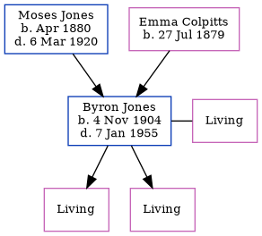

The older of 2 children of Moses Jones and Emma ColpittsByron Jones, the fourth cousin once-removed on the father's side of Nigel Horne, was born in Coverdale, Albert, New Brunswick, Canada on 4 Nov 19041 and. He married Thelma Jacobson (with whom he had 2 surviving children T E and G W) in Moncton, Westmorland, New Brunswick, Canada on 24 Apr 19362. In 1911, he lived in Westmorland1.
He died on 7 Jan 1955 in Truro, Colchester, Nova Scotia, Canada.
1911 Census of Canada Online publication - Provo, UT, USA: Ancestry.com Operations Inc, 2006. .Original data - Library and Archives Canada. Census of Canada, 1911. Ottawa, Ontario, Canada: Library and Archives Canada, 2007. http://www.collectionscanada.gc.ca/databases/census-19 (Marital Status: Single; Relation to Head of House: Son)
Website Link
Media
1911 Canada Census
Family Tree

Map
Generated by ged2site. Last updated on Feb 19, 2025